Devocional Real y Directo
- Devocionales escritos para tu situación actual
- Construcción emocional honesta
- Conexión con la fe moderna y temas que no se hablan en la iglesia
Tu Nueva Era en Cristo
Existe un devocional creado para la mujer cristiana que está cansada de presentarse ante Dios por fuera mientras se derrumba por dentro. Presentamos Tu Nueva Era en Cristo — el diario interactivo premium de 172 páginas que te llevará del agotamiento espiritual a una relación sincera con Dios, una página honesta a la vez.
Consigue el EbookDescarga instantánea · Desde $12.99 · + 2 bonificaciones digitales gratis
“Ella tenía su Biblia. Su lista de canciones de adoración. Su devocional diario. Y aún así, estaba exhausta.”
Se despertaba cada domingo y elegía el atuendo correcto. Publicaba los versículos correctos. Decía “Estoy bien, Dios es fiel” en cada conversación.
Pero a las 2 a.m., regresaba la ansiedad. La agotadora comparación volvía a comenzar. La vergüenza susurraba que tal vez ella no estaba tan cerca de Dios como todos creían.
No estaba fingiendo su fe. Genuinamente amaba a Jesús.
Solo estaba cansada de actuarla.
Tal vez eso eres tú en este momento.
Tal vez hayas leído varios devocionales. Hecho los planes bíblicos. Escrito las listas de gratitud. Y algo aún se siente… superficial. Como si estuvieras dando vueltas en la vida cristiana sin nunca ir más profundo.
No estás rota. No estás retrocediendo.
Simplemente estás lista para abordarlo desde la raíz.
Este no es un diario que te pide enumeres tres cosas por las que estés agradecida y digas que todo está bien.
Este es una experiencia interactiva de 172 páginas construida alrededor de una estructura única de tres páginas para cada tema — porque la transformación real no sucede con un checklist. Sucede cuando la verdad se encuentra con la herida específica.
Páginas reales del diario — desliza para explorarlas
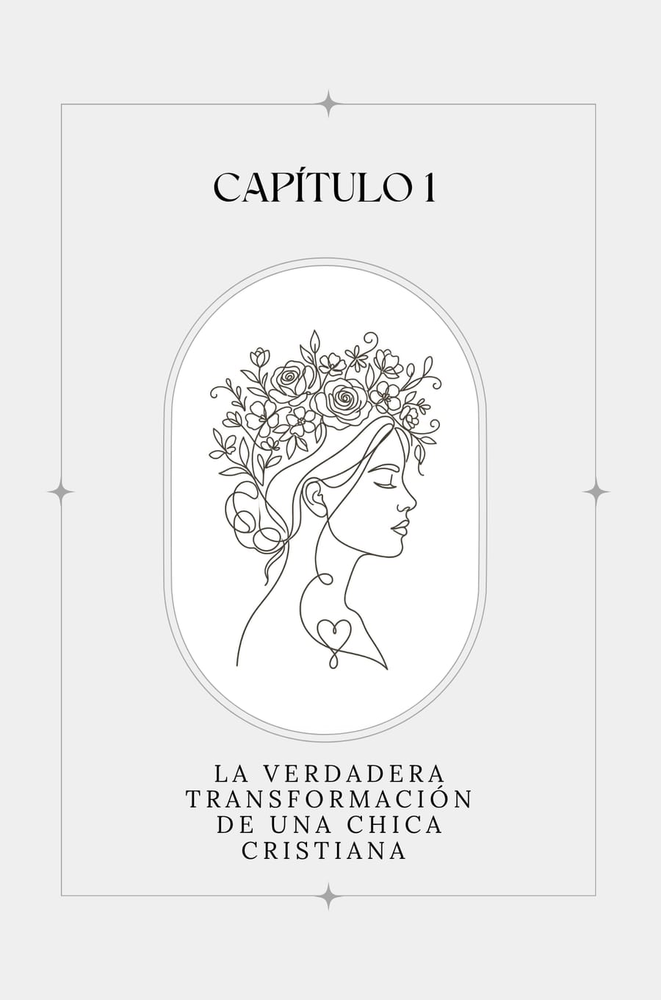
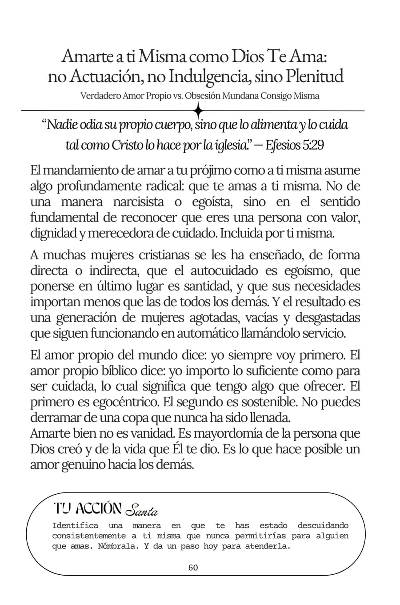
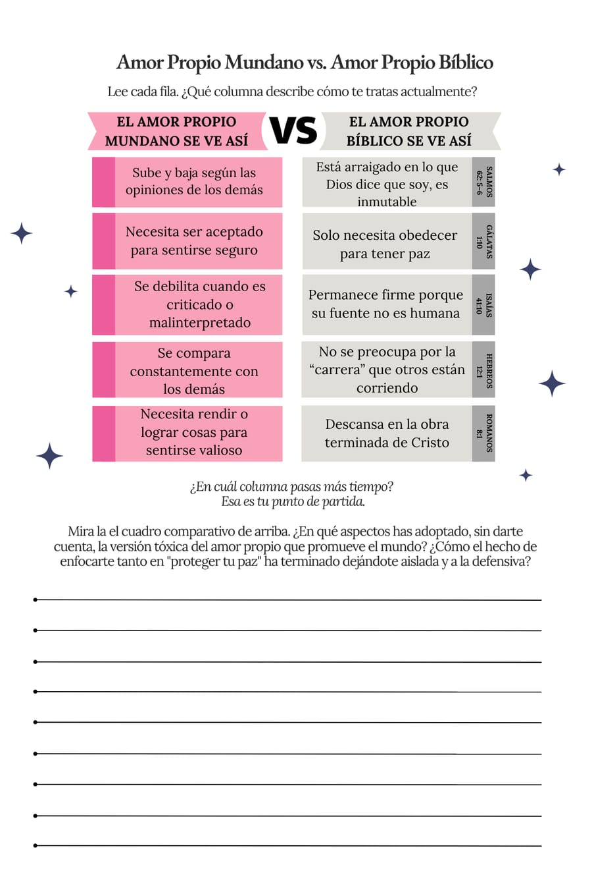
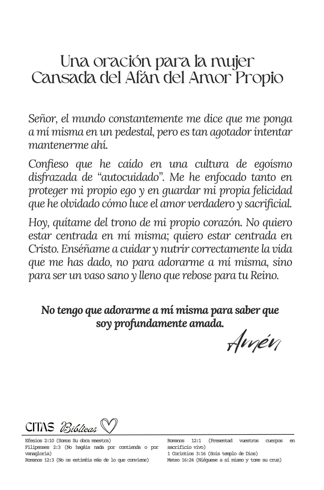
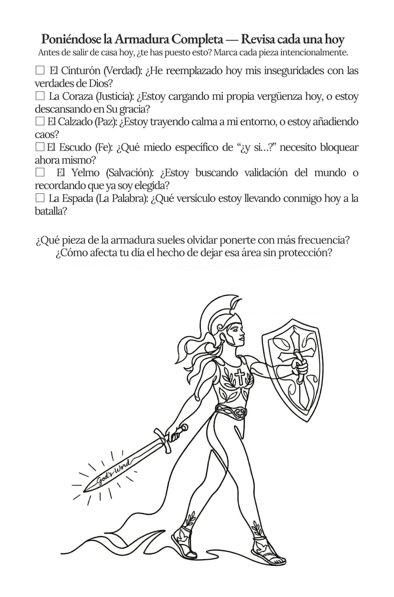
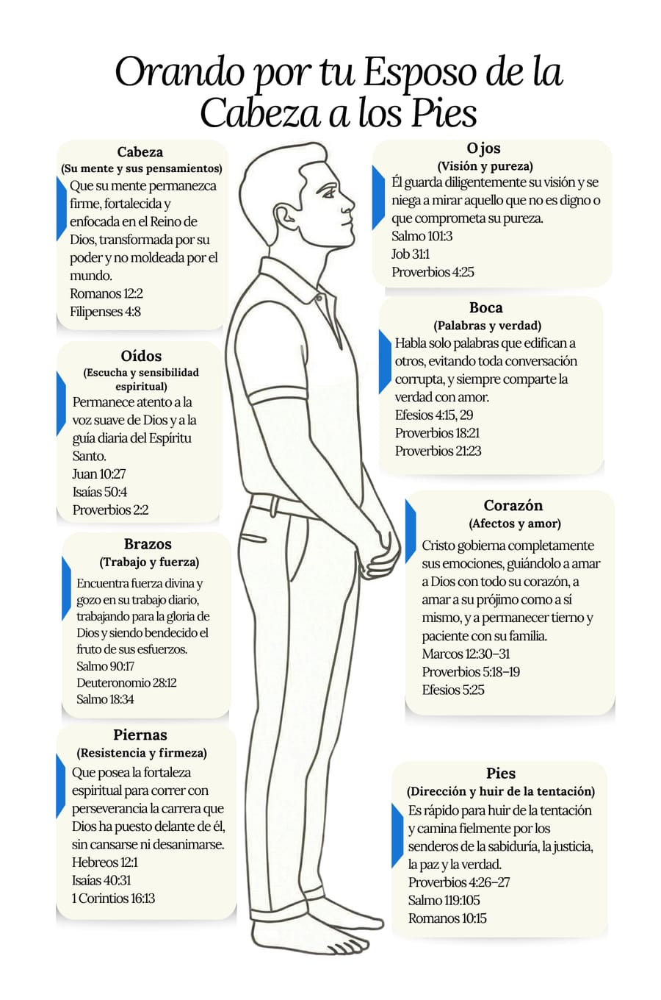
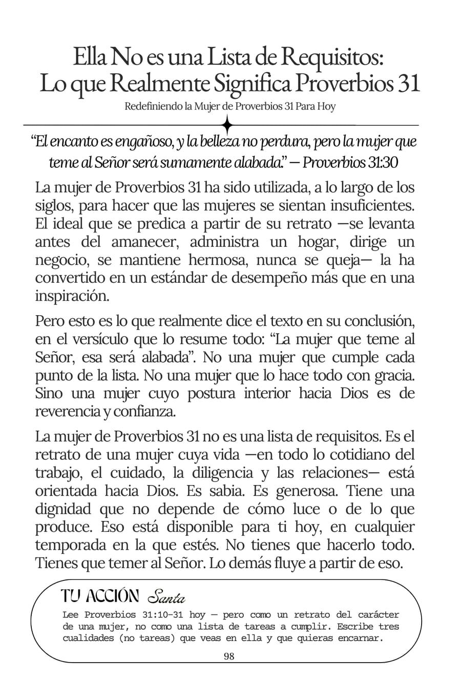
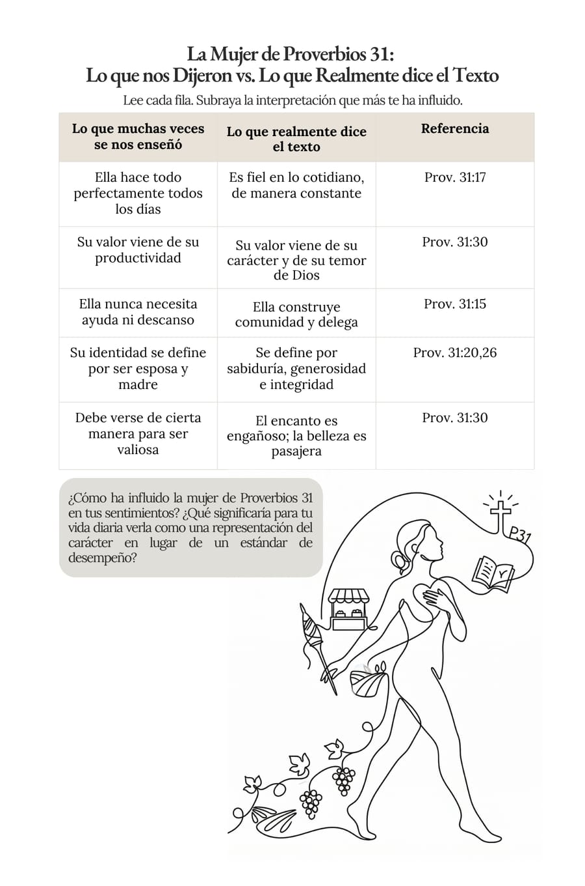
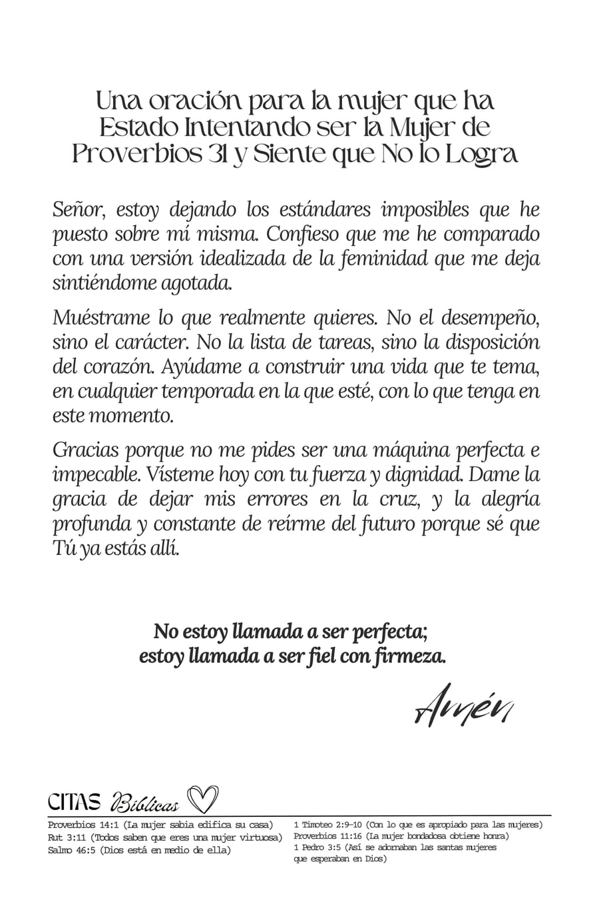
“He comprado varios diarios devocionales. Este es el primero que me hizo llorar, no por inspiración, sino por finalmente sentirme vista. El capítulo de ansiedad me ayudó bastante.”
“La estructura de tres páginas es genial. La oración al final de cada sección no se siente forzada, se siente que fue escrita exactamente para lo que estaba pasando. Nunca había terminado un diario antes. Este lo leí en menos de 15 días.”
“He sido cristiana toda mi vida y no me di cuenta de cuánta de mi fe era en realidad complacencia. Hasta que este diario lo señaló con escritura Y una autoevaluación. Eso fue diferente.”
172 Páginas. 10 Capítulos. Una Era Completa.
Tu compra incluye dos bonificaciones digitales gratis.
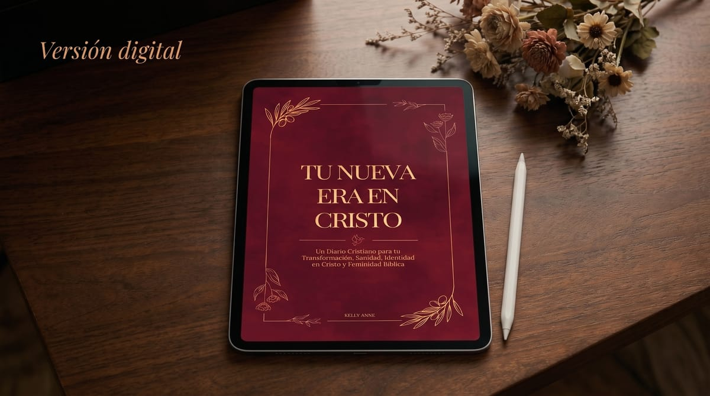
Descarga instantánea de PDF: las 172 páginas con sus herramientas interactivas — imprimibles en casa o rellenables desde tu dispositivo móvil o tablet. Acceso en el momento que compres. Perfecto para órdenes internacionales o si la quieres hoy.
Desde $12.99
+ Mini Web App “El Santuario Diario” + Registro de 30 días de Hábitos Cristianos, incluidos gratis.
Conseguirlo en HotmartTodas las compras incluyen tus dos bonificaciones gratuitas. Sin excepciones.
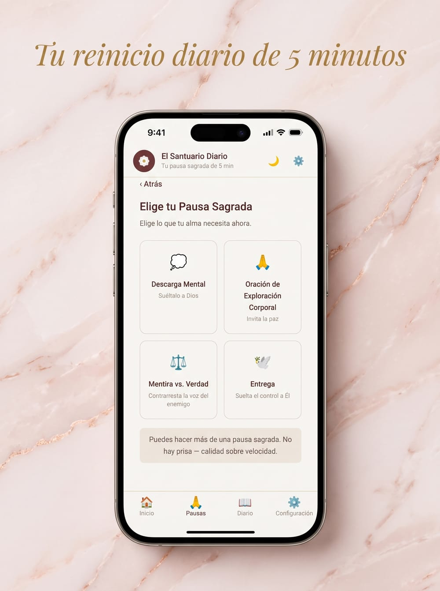
REGALO GRATIS
$27 Incluida Gratis
Diseñada para mujeres cristianas que enfrentan la ansiedad y la duda en un mundo lleno de ruido. Cada día eliges una de cuatro pausas sagradas, dedicas 5 minutos a reflexionar en la Palabra de Dios, registras cómo cambia tu estado de ánimo y construyes un ritmo constante de descanso espiritual.
Tus datos permanecen privados en tu dispositivo. Sin inicio de sesión. Sin rastreo. Solo tú y Dios. 🙏
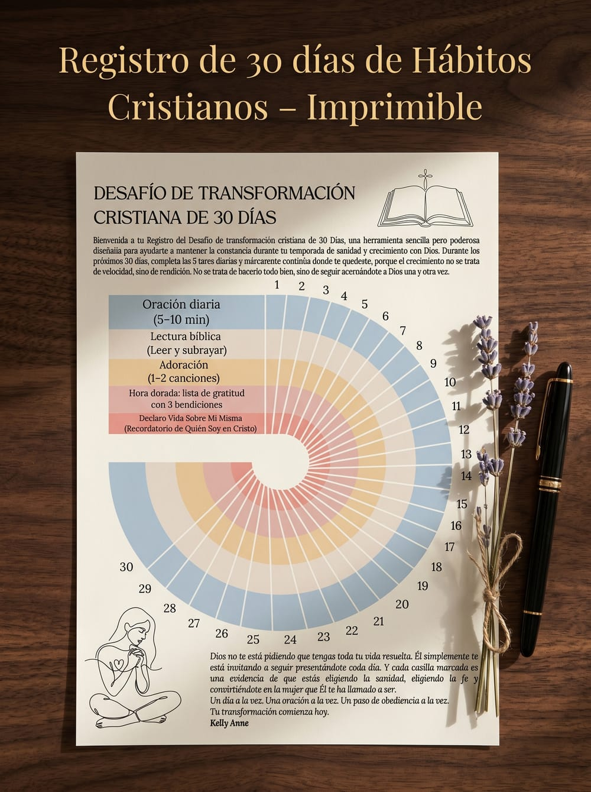
REGALO GRATIS
$3 Incluido Gratis
Un registro bellamente diseñado para imprimir en casa, construido para mantener y vigilar tus hábitos espirituales diarios — consistentes y satisfactorios de marcar.
Imprímelo. Enmárcalo. Cuélgalo en tu espejo. Úsalo cada día hasta que la consistencia deje de ser una meta y se convierta en tu identidad.
| Lo Que La Mayoría de Mujeres Gastan | Costo |
|---|---|
| Una sesión de terapia | $100–$250 |
| Un programa de coaching para mujeres cristianas | $500–$1,000 |
| Un diario devocional genérico que nunca terminas | $18–$25 |
| Un curso en línea basado en fe | $97–$200 |
| TOTAL | $715–$1,475 |
| ✦ Tu Nueva Era en Cristo + las 2 bonificaciones | Desde $12.99 |
$12.99
Ebook digital en Hotmart · Precio de lanzamiento
Ese es tu kit completo de la temporada de sanidad.
Tu reinicio de identidad. Tu marco de ansiedad. Tu momento de hacer el trabajo interno con Dios. Tu guía de transformación de 10 capítulos.
Todo. Por menos de un café y un desayuno dominical.
Sin suscripción. Sin membresía requerida.
Una compra. Una era. Tuya para usar siempre que lo necesites.
Has estado esperando el momento correcto para ir más profundo.
Has estado esperando sentirte lista.
Has estado esperando una señal.
Esta es la señal.
Consigue Tu Versión Digital en Hotmart+ Acceso instantáneo a la Mini Web App “El Santuario Diario” & al Registro de 30 días de Hábitos Cristianos imprimible
“Ella está vestida de fuerza y dignidad.” — Proverbios 31:25
Pero si estás lista para ir más profundo…
Si estás harta de gestionar tu imagen y estás lista para reconstruir tu identidad.
Si estás lista para dejar de actuar y realmente convertirte en la mujer que Dios te llamó a ser:
Este libro fue escrito para ti. ✦
Este es el inicio de tu Temporada de Sanación.
Aquí es lo que sabemos sobre la transformación: las mujeres que comienzan ahora — no el próximo lunes, no después de la temporada de vacaciones, no cuando las cosas se desaceleran — son las que realmente terminan.
El diario seguirá estando aquí el próximo mes.
Pero ¿seguirás en este exacto momento de disposición?
La versión de ti que está leyendo esto ahora mismo — la que está suficientemente cansada de la actuación como para realmente hacer algo al respecto — no regresa tan seguido.
No la dejes ir sin la herramienta que vino aquí a encontrar.
⏳ Precio de lanzamiento desde $12.99 — sujeto a cambios conforme las reseñas crecen.
Tu Nueva Era en Cristo
Ebook + 2 bonos · desde $12.99